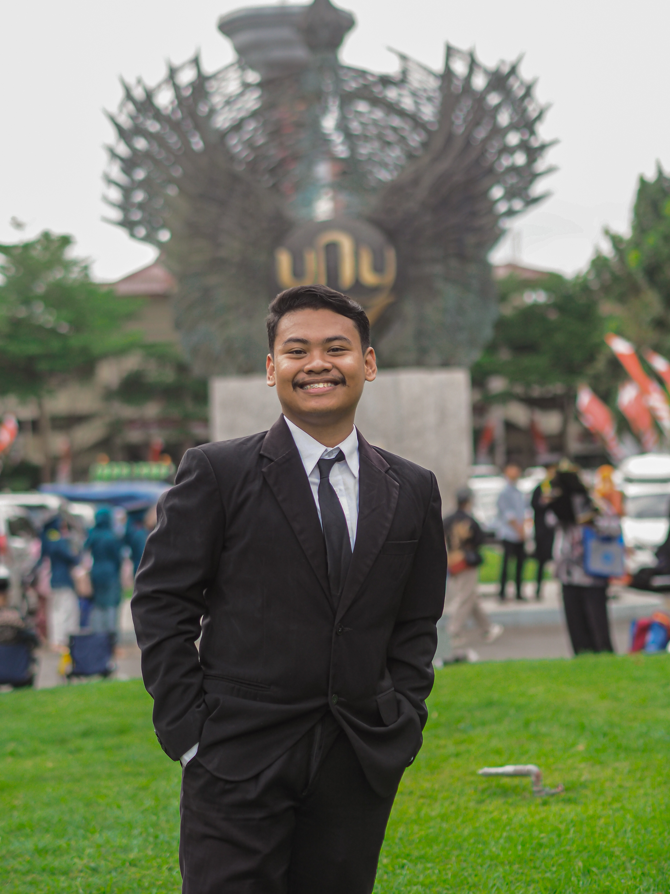

Nur Isnanto Nugroho, S.Pd
Mahasiswa PPG Calon Guru - Universitas Negeri Yogyakarta
Halo! Saya Nur Isnanto Nugroho, tumbuh besar di Kabupaten Sleman yang kental dengan budaya santun dan keindahan Gunung Merapi. Karakteristik lingkungan yang suportif ini membentuk pribadi saya yang adaptif dan komunikatif hingga saat ini.
Inspirasi saya menjadi guru muncul saat membimbing lomba video kreatif di SMKN 1 Pengasih. Meski saat itu belum berhasil menang, pengalaman tersebut memicu ambisi saya untuk menjadi pengajar yang mampu membimbing siswa meraih prestasi. Melalui PPG Informatika ini, tujuan utama saya adalah menjadi pendidik inovatif yang mampu mengasah kreativitas dan potensi digital peserta didik..
"Cara terbaik untuk memprediksi masa depan adalah dengan menciptakannya."
Jejak Pendidikan
Pendidikan Profesi Guru (PPG) Prajabatan
Universitas Negeri Yogyakarta
2026 - SekarangSaat ini menempuh pendidikan profesi untuk bertransformasi menjadi guru yang profesional, inovatif, dan inklusif bagi peserta didik.
S1 Sistem Informasi
Universitas Islam Negeri Raden Intan Lampung
2021 - 2025Lulus dengan gelar Sarjana Komputer (S.Kom). Mempelajari dan mengembangkan berbagai proyek terkait teknologi dan pendidikan.
SMAN 3 Unggulan Kayuagung
Kabupaten Ogan Komering Ilir (OKI)
2018 - 2021Jurusan Ilmu Pengetahuan Alam
Hobi & Minat
Fotografi
Mengabadikan momen berharga dan keindahan sekitar melalui lensa kamera.
Membaca Buku
Membaca buku fiksi membantu saya meningkatkan empati dan meredakan stres.
Traveling
Menjelajahi tempat baru, menikmati pantai dan gunung untuk menyegarkan pikiran.